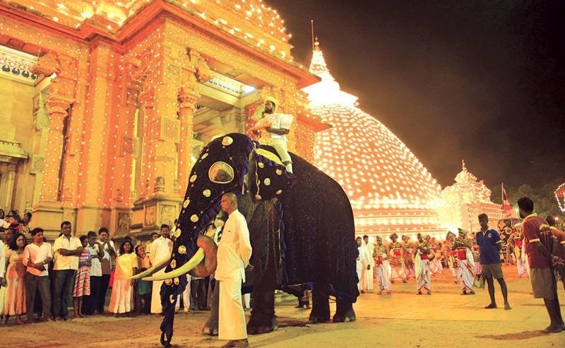
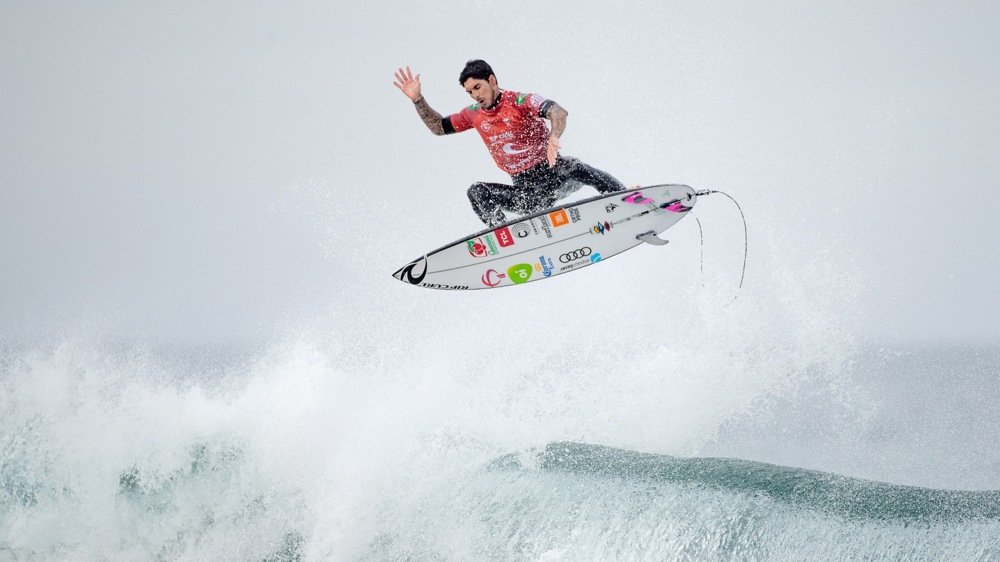
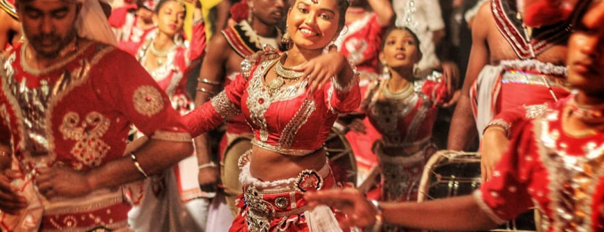
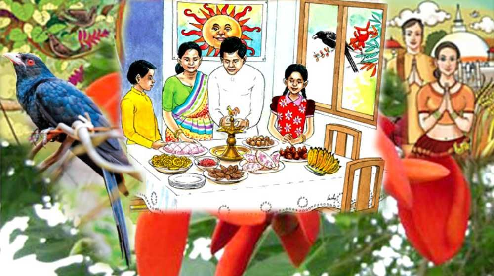
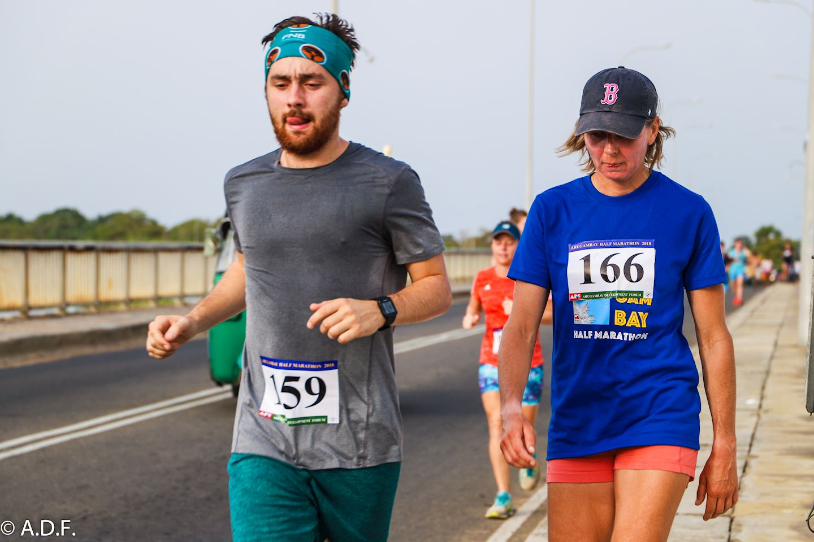

Duruthu Perahera 2022
16 January 2022

- The Duruthu Perahera is one of the most culturally glorious celebrated by devotees annually during the month of January.
- This event is primarily focused on showcasing the unique culture and heritage of Sri Lanka.
- This event will consist of three processions which will happen at night on three consecutive days.
- Many tourists and locals arrive to watch the parade since it is held in a suburb of Colombo.
- The Perahera is broadcasted via local and international media.
World Surf League 2022
9 February 2022

- The 2022 CT season will start with the best 36 men and 18 women in the world, this will be reduced to 24 men and 12 women at the middle of the season.
- Those who make it past the mid-season cut re-qualify for the 2023 championship tour.
- The top five men and women at the end of the season will compete at the Rip Curl WSL finals in September 2022 for the championship.
- There are 16 more men and nine females to be added on the WSL tour. The top 12 ranked men and top six women from the Challenger series will
automatically qualify for the 2022 Championship tour.
- The challenger series ends in December this year. Australian surfers Connor O'Leary, Liam O'Brien, Callum Robson and India Robinson are currently
in a qualification spot to be on tour next year.
Navam Perahera 2022
15 February 2022

- Navam Maha Perahera is similar to the famous Kandy Perahera festival and is held in Colombo.
- An amazing celebration of dance and music, that is a spectacle to behold.
- This colorful and exotic Sri Lankan festival comprises of almost 100 elephants, over 5,000 artistes with dancers, acrobats, drummers, torch bearers and more.
- This is a special experience to try and plan to see on your next visit to Sri Lanka. Click on the link we have provided to learn more about this festival.
- We wish to thank GoWhereWhen.com community member Christien Falloon for his beautiful shot taken at the event.
Sinhala and Tamil New Year 2022
14 April 2022

- The New Year’s celebration is all the more festive because it is observed by both Sinhala Buddhists and Tamil Hindus.
- The annual event is marked by religious ceremonies, family activities, traditional foods, colourful decorations and a general feeling of good will toward neighbours and friends.
- This important national festival, known as Avurudu in Sinhala and Puththandu in Tamil, is not celebrated in any other nation. It is unique to the people of Sri Lanka.
- Traditional sweetmeats – such as kavum, kokis, aasmi and aluwa – are also prepared and exchanged.
- Loud firecrackers and the sound of raban (traditional Sri Lankan drums) can be heard on the streets as part of celebrations as well, filling the air with an uplifting Avurudu spirit.
Arugam Bay Half Marathon 2022
4 May 2022

- The Arugam Bay Half Marathon is a charity event to support the education of local kids in Sri Lanka and to give international runners a local running experience in beautiful Arugam Bay.
- Follow Arugam Bay Half Marathon on Instagram to see how the experience really looks like https://www.instagram.com/arugambayhalf and tag your training efforts toward Arugam Bay Half Marathon with #runsrilanka #arugambayhalf
- The event is being organised by the Arugambay Development Forum (ADF) www.adfarugambay.org an organisation that actively supports local education needs.
- The event slogan is “Run for Education” and any money raised from the event is promised to benefit the local community.